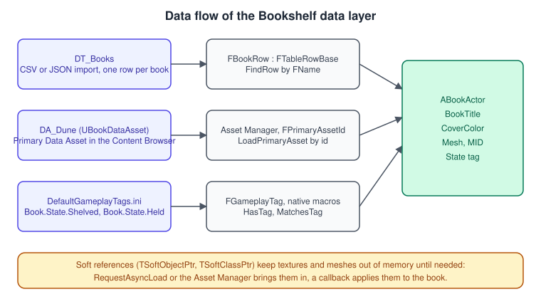
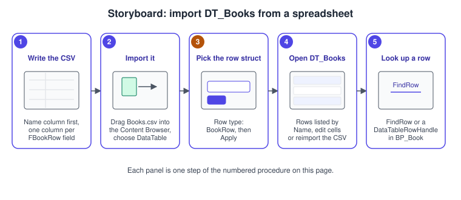
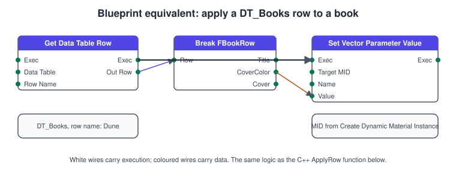

Data-Driven Gameplay
|
This content was generated with the assistance of AI and should be verified against the official documentation before being relied on in production. |
A game that hard-codes its content is a game where every new book, price or tuning value needs a programmer and a recompile. A data-driven game keeps the rules in code and moves the content into assets that designers edit: a spreadsheet of books, one asset per special book, a tag for every state a book can be in. Unreal Engine has four main tools for this, and the Bookshelf uses all of them: Data Tables (rows imported from a spreadsheet), Data Assets (one asset per object, with the Asset Manager to find and load them), soft references (a pointer that does not force the target into memory) and Gameplay Tags (hierarchical labels checked like booleans).
The facts on this page were checked in November 2026 against the Unreal Engine 5.8 documentation (5.8 was released on 17 June 2026; the latest hotfix found is 5.8.4). The
examples are C++ for a project created from the Third Person template with a game module named Bookshelf (API macro BOOKSHELF_API, log category LogBookshelf), and they build
on every platform Unreal supports, Windows with Visual Studio 2022 17.14 or newer (Visual Studio 2026 is recommended), macOS with Xcode, Linux with clang and Android and iOS through
their toolchains. The engine-neutral side of the topic is in
Scene Graphs and Asset Formats; the Unity counterpart is
ScriptableObjects and Data-Driven Design. This page follows
Actors and Components and uses the reflection rules from
UObject, Reflection and Garbage Collection.
The data layer of the Bookshelf

The Bookshelf needs three kinds of data. The catalogue (title, cover colour, cover texture, page count, one row per book) is a table: it is tabular, a designer maintains it in a spreadsheet and it has hundreds of rows. A featured book (a rare edition with its own mesh, a cover texture, a sound and a description) is an asset: it has structure that a table row would flatten, and the Asset Manager can find and load it by name. The state of a book (shelved, held) is a tag: it is a label, many systems ask about it and it must be the same word everywhere. Pick the tool by the shape of the data, not by habit.
| Tool | Use it for | Avoid it for |
|---|---|---|
Data Table |
Many rows of the same shape, edited as a spreadsheet, referenced by row name. |
Data with nested structure or assets that must be loaded on demand by type. |
Curve Table |
Numbers that vary along an axis: XP per level, damage over distance. |
Anything that is not a function of one input. |
Data Asset |
One configuration per object: an item, a weapon, a level theme. |
Thousands of tiny records (use a table or a Data Registry). |
Primary Data Asset with the Asset Manager |
Data Assets that must be discovered, loaded and unloaded by name, and audited for size. |
Data that is always loaded anyway. |
Gameplay Tag |
States, categories, capabilities, queries such as "has any of". |
Numeric values (a tag carries no number). |
Data Tables
A Data Table is an asset that holds rows. Every row maps onto a native USTRUCT that inherits from FTableRowBase, the row struct, and every column maps onto one property
of that struct. The first column is named Name and is the row key, an FName. A property can be any valid reflected property type, including FText, FLinearColor, gameplay
tags and asset references, so the table can name a texture without loading it. Epic describes Data Tables as the way to let designers keep gameplay data in spreadsheets and import it
without code changes.
The row struct
The struct is the schema. It must derive from FTableRowBase to appear in the importer’s Row Type list. FTableRowBase also offers three virtual hooks you can override:
IsDataValid (validate a row when the editor validates data), OnDataTableChanged (called for every row when the owning table is edited) and OnPostDataImport (called after an
import or reimport, a good place to fix up derived values).
// Source/Bookshelf/Public/BookRow.h
#pragma once
#include "CoreMinimal.h"
#include "Engine/DataTable.h"
#include "Engine/Texture2D.h"
#include "GameplayTagContainer.h"
#include "BookRow.generated.h"
/** One row of DT_Books. The first CSV column (Name) is the row key and is not a member. */
USTRUCT(BlueprintType)
struct BOOKSHELF_API FBookRow : public FTableRowBase
{
GENERATED_BODY()
/** Shown on the HUD and on the cover. */
UPROPERTY(EditAnywhere, BlueprintReadOnly, Category = "Book")
FText Title;
UPROPERTY(EditAnywhere, BlueprintReadOnly, Category = "Book")
FLinearColor CoverColor = FLinearColor(0.35f, 0.18f, 0.08f, 1.0f);
/** Soft reference: naming the texture does not load it. */
UPROPERTY(EditAnywhere, BlueprintReadOnly, Category = "Book")
TSoftObjectPtr<UTexture2D> CoverTexture;
UPROPERTY(EditAnywhere, BlueprintReadOnly, Category = "Book", meta = (ClampMin = "1"))
int32 PageCount = 200;
/** State a book starts in, for example Book.State.Shelved. */
UPROPERTY(EditAnywhere, BlueprintReadOnly, Category = "Book")
FGameplayTag InitialState;
virtual void OnPostDataImport(const UDataTable* InDataTable, const FName InRowName,
TArray<FString>& OutCollectedImportProblems) override
{
if (PageCount < 1)
{
OutCollectedImportProblems.Add(FString::Printf(TEXT("Row %s has no pages"), *InRowName.ToString()));
}
}
};A Data Table can also be authored as JSON, and a Composite Data Table stacks several tables of the same row type so that later tables override earlier ones, which is how a
base game and a DLC can share one lookup. The importer options let you ignore extra or missing fields and choose an Import Key Field when the key column is not named Name.
Procedure: import DT_Books from a spreadsheet

-
Build the
Bookshelfmodule withFBookRowin it (Live Coding or a full build) and keep the editor open. -
In a spreadsheet, write a header row whose first column is
Nameand whose other columns carry the property names ofFBookRow:Title,CoverColor,CoverTexture,PageCount,InitialState. Save it asBooks.csv. -
Drag
Books.csvinto the Content Browser folder/Game/Bookshelf/Data. The import dialog opens. -
Choose DataTable as the asset type, pick
BookRowas the Row Type and press Apply. The editor createsDT_Books. -
Open
DT_Books. Each row shows its key and the column values; edit a cell in the editor or edit the CSV and reimport (the asset remembers the source path).
Name,Title,CoverColor,CoverTexture,PageCount,InitialState
Dune,"Dune",(R=0.35,G=0.18,B=0.08,A=1.0),,412,(TagName="Book.State.Shelved")
Emma,"Emma",(R=0.10,G=0.25,B=0.45,A=1.0),,474,(TagName="Book.State.Shelved")Looking a row up
In C++, UDataTable::FindRow<T>(RowName, ContextString) returns a pointer to the row or nullptr; the context string is only used for the log message when the row is
missing. A FDataTableRowHandle (a table reference plus a RowName) is the usual way to store a reference to one row in a property, because the editor shows it as a
table-and-row picker. Do not cache the row pointer beyond the current function: a reimport replaces the row memory.
// Source/Bookshelf/Public/BookActor.h (excerpt: the data-related members of ABookActor)
#pragma once
#include "CoreMinimal.h"
#include "GameFramework/Actor.h"
#include "Engine/DataTable.h"
#include "Engine/StreamableManager.h"
#include "GameplayTagContainer.h"
#include "BookActor.generated.h"
class UStaticMeshComponent;
class UMaterialInstanceDynamic;
class UTexture2D;
UCLASS()
class BOOKSHELF_API ABookActor : public AActor
{
GENERATED_BODY()
public:
ABookActor();
/** Which DT_Books row describes this book. Pick it in the Details panel. */
UPROPERTY(EditAnywhere, BlueprintReadOnly, Category = "Book", meta = (RowType = "/Script/Bookshelf.BookRow"))
FDataTableRowHandle BookRow;
UPROPERTY(VisibleAnywhere, BlueprintReadOnly, Category = "Book")
TObjectPtr<UStaticMeshComponent> Mesh;
UPROPERTY(VisibleAnywhere, BlueprintReadOnly, Category = "Book")
FText BookTitle;
UPROPERTY(VisibleAnywhere, BlueprintReadOnly, Category = "Book")
FLinearColor CoverColor = FLinearColor::White;
UPROPERTY(VisibleAnywhere, BlueprintReadOnly, Category = "Book")
FGameplayTagContainer StateTags;
/** Reads BookRow and applies it. Also callable from Blueprint, for example from the Construction Script. */
UFUNCTION(BlueprintCallable, Category = "Book")
void ApplyRow();
UFUNCTION(BlueprintCallable, Category = "Book")
void SetBookState(FGameplayTag NewState);
protected:
virtual void OnConstruction(const FTransform& Transform) override;
virtual void EndPlay(const EEndPlayReason::Type EndPlayReason) override;
private:
void OnCoverLoaded();
UPROPERTY(Transient)
TObjectPtr<UMaterialInstanceDynamic> CoverMaterial;
/** Keeps the loaded texture alive until this book is destroyed. */
TSharedPtr<FStreamableHandle> CoverHandle;
TSoftObjectPtr<UTexture2D> PendingCover;
};// Source/Bookshelf/Private/BookActor.cpp
#include "BookActor.h"
#include "Bookshelf.h"
#include "BookRow.h"
#include "BookshelfGameplayTags.h"
#include "Components/StaticMeshComponent.h"
#include "Engine/AssetManager.h"
#include "Materials/MaterialInstanceDynamic.h"
ABookActor::ABookActor()
{
PrimaryActorTick.bCanEverTick = false;
Mesh = CreateDefaultSubobject<UStaticMeshComponent>(TEXT("Mesh"));
SetRootComponent(Mesh);
}
void ABookActor::OnConstruction(const FTransform& Transform)
{
Super::OnConstruction(Transform);
ApplyRow();
}
void ABookActor::ApplyRow()
{
if (BookRow.IsNull())
{
return;
}
const FBookRow* Row = BookRow.GetRow<FBookRow>(TEXT("ABookActor::ApplyRow"));
if (Row == nullptr)
{
UE_LOG(LogBookshelf, Warning, TEXT("%s: row %s not found in its data table"), *GetName(), *BookRow.RowName.ToString());
return;
}
BookTitle = Row->Title;
CoverColor = Row->CoverColor;
StateTags.Reset();
if (Row->InitialState.IsValid())
{
StateTags.AddTag(Row->InitialState);
}
CoverMaterial = Mesh->CreateAndSetMaterialInstanceDynamic(0);
if (CoverMaterial)
{
CoverMaterial->SetVectorParameterValue(TEXT("CoverColor"), CoverColor);
}
// The texture is a soft reference: load it asynchronously and apply it in the callback.
PendingCover = Row->CoverTexture;
if (!PendingCover.IsNull())
{
if (PendingCover.IsValid())
{
OnCoverLoaded();
}
else
{
CoverHandle = UAssetManager::GetStreamableManager().RequestAsyncLoad(
PendingCover.ToSoftObjectPath(),
FStreamableDelegate::CreateUObject(this, &ABookActor::OnCoverLoaded));
}
}
}
void ABookActor::OnCoverLoaded()
{
if (CoverMaterial && PendingCover.IsValid())
{
CoverMaterial->SetTextureParameterValue(TEXT("CoverTex"), PendingCover.Get());
}
}
void ABookActor::SetBookState(FGameplayTag NewState)
{
StateTags.RemoveTag(BookshelfTags::Book_State_Shelved);
StateTags.RemoveTag(BookshelfTags::Book_State_Held);
StateTags.AddTag(NewState);
}
void ABookActor::EndPlay(const EEndPlayReason::Type EndPlayReason)
{
if (CoverHandle.IsValid())
{
CoverHandle->CancelHandle();
CoverHandle.Reset();
}
Super::EndPlay(EndPlayReason);
}Source: FTableRowBase API reference, Asynchronous Asset Loading in Unreal Engine and Material Instances in Unreal Engine
The same lookup in Blueprint is the Get Data Table Row node, or a Data Table Row Handle variable whose row you resolve with the same node. The node has two exec outputs, Row
Found and Row Not Found, which is the Blueprint form of the nullptr check above.

Curve Tables
A Curve Table stores two-dimensional numeric data: the column headings are the X values and every row is one curve whose cells are the Y values. Each curve chooses constant, linear or
cubic interpolation, and the editor can graph several curves together. Read a value in C++ with FindCurve or GetCurve (an FRichCurve pointer) and Eval, or expose an
FCurveTableRowHandle in a Blueprint. Use them for numbers that depend on one input; the Gameplay Ability System (see
Gameplay Ability System) scales effect magnitudes with them.
Data Assets and Primary Data Assets
A Data Asset is an asset that stores data for one system in an instance of its class. You make one from a native class derived from UDataAsset, or from a Data Only Blueprint.
Where a table row is a flat record, a Data Asset is a full UObject: it can hold arrays, nested structs, asset references and its own functions.
A Primary Data Asset (UPrimaryDataAsset) adds two things: a Primary Asset Id, which the Asset Manager uses to find it by name, and asset bundles, named groups of the assets it
references that can be loaded together. Its Primary Asset Type is, by default, the name of the first native class up the hierarchy (or the highest-level Blueprint class). Override
GetPrimaryAssetId when you want a different type.
// Source/Bookshelf/Public/BookDataAsset.h
#pragma once
#include "CoreMinimal.h"
#include "Engine/DataAsset.h"
#include "Engine/StaticMesh.h"
#include "Engine/Texture2D.h"
#include "GameplayTagContainer.h"
#include "BookDataAsset.generated.h"
/** A featured book: one asset per book, discoverable through the Asset Manager. */
UCLASS(BlueprintType)
class BOOKSHELF_API UBookDataAsset : public UPrimaryDataAsset
{
GENERATED_BODY()
public:
UPROPERTY(EditAnywhere, BlueprintReadOnly, Category = "Book")
FText Title;
UPROPERTY(EditAnywhere, BlueprintReadOnly, Category = "Book")
FText Author;
UPROPERTY(EditAnywhere, BlueprintReadOnly, Category = "Book")
FLinearColor CoverColor = FLinearColor::White;
/** Both soft references belong to the "Visuals" bundle, loaded only when a book is shown. */
UPROPERTY(EditAnywhere, BlueprintReadOnly, Category = "Book", meta = (AssetBundles = "Visuals"))
TSoftObjectPtr<UTexture2D> Cover;
UPROPERTY(EditAnywhere, BlueprintReadOnly, Category = "Book", meta = (AssetBundles = "Visuals"))
TSoftObjectPtr<UStaticMesh> SpecialMesh;
UPROPERTY(EditAnywhere, BlueprintReadOnly, Category = "Book")
FGameplayTagContainer Tags;
virtual FPrimaryAssetId GetPrimaryAssetId() const override
{
// Id looks like Book:DA_Dune; the type string must match the Asset Manager setting below.
return FPrimaryAssetId(FPrimaryAssetType(TEXT("Book")), GetFName());
}
};To create the asset, build the project, right-click in the Content Browser and choose Miscellaneous > Data Asset, then pick BookDataAsset from the class list. Epic’s page lists
the same steps for a native class. In 5.8 the right-click menu also has a Data section meant to make data-oriented assets easier to find.
The Asset Manager
The Asset Manager decides which assets are Primary (managed by id) and which are Secondary (loaded by the engine because a Primary Asset references them). By default only levels
(UWorld) are Primary; any other class becomes Primary by overriding GetPrimaryAssetId. It gives you control over when assets are discovered, loaded and audited, and it can
chunk and cook them by rule. Configure it in Project Settings > Game > Asset Manager:
-
Primary Asset Types to Scan says which types to register, where to look, and the cook rule. Add
Bookwith base classBookDataAssetand the directory/Game/Bookshelf/Books. -
Directories to Exclude skips folders such as test content.
-
Only Cook Production Assets keeps development-only assets out of shipping builds.
The setting is saved to Config/DefaultGame.ini:
[/Script/Engine.AssetManagerSettings]
+PrimaryAssetTypesToScan=(PrimaryAssetType="Book",AssetBaseClass="/Script/Bookshelf.BookDataAsset",bHasBlueprintClasses=False,bIsEditorOnly=False,Directories=((Path="/Game/Bookshelf/Books")),Rules=(Priority=-1,ChunkId=-1,bApplyRecursively=True,CookRule=AlwaysCook))An FPrimaryAssetId has two parts, the type that groups assets and a name, which defaults to the asset’s name in the Content Browser (a UBookDataAsset called DA_Dune is
Book:DA_Dune). The loading API is LoadPrimaryAsset, LoadPrimaryAssets and LoadPrimaryAssetsWithType, with matching Unload functions; each can name the bundles to load, so a
list screen can load the Meta bundle for a hundred books and only the Visuals bundle for the one on screen.
// Source/Bookshelf/Public/BookshelfGameInstance.h
#pragma once
#include "CoreMinimal.h"
#include "Engine/GameInstance.h"
#include "BookshelfGameInstance.generated.h"
class UBookDataAsset;
UCLASS()
class BOOKSHELF_API UBookshelfGameInstance : public UGameInstance
{
GENERATED_BODY()
public:
/** Loads every Book primary asset and their Visuals bundle in the background. */
UFUNCTION(BlueprintCallable, Category = "Bookshelf")
void LoadFeaturedBooks();
UFUNCTION(BlueprintPure, Category = "Bookshelf")
const TArray<UBookDataAsset*>& GetFeaturedBooks() const { return FeaturedBooks; }
protected:
virtual void Shutdown() override;
private:
void OnFeaturedBooksLoaded();
UPROPERTY(Transient)
TArray<TObjectPtr<UBookDataAsset>> LoadedBooks;
TArray<UBookDataAsset*> FeaturedBooks;
};// Source/Bookshelf/Private/BookshelfGameInstance.cpp
#include "BookshelfGameInstance.h"
#include "Bookshelf.h"
#include "BookDataAsset.h"
#include "Engine/AssetManager.h"
static const FPrimaryAssetType BookAssetType(TEXT("Book"));
void UBookshelfGameInstance::LoadFeaturedBooks()
{
UAssetManager& Manager = UAssetManager::Get();
const TArray<FName> Bundles = { FName(TEXT("Visuals")) };
Manager.LoadPrimaryAssetsWithType(
BookAssetType, Bundles,
FStreamableDelegate::CreateUObject(this, &UBookshelfGameInstance::OnFeaturedBooksLoaded));
}
void UBookshelfGameInstance::OnFeaturedBooksLoaded()
{
TArray<UObject*> Objects;
UAssetManager::Get().GetPrimaryAssetObjectList(BookAssetType, Objects);
FeaturedBooks.Reset();
LoadedBooks.Reset();
for (UObject* Object : Objects)
{
if (UBookDataAsset* Book = Cast<UBookDataAsset>(Object))
{
FeaturedBooks.Add(Book);
LoadedBooks.Add(Book);
}
}
UE_LOG(LogBookshelf, Log, TEXT("Loaded %d featured books"), FeaturedBooks.Num());
}
void UBookshelfGameInstance::Shutdown()
{
UAssetManager::Get().UnloadPrimaryAssetsWithType(BookAssetType);
Super::Shutdown();
}Soft references and asynchronous loading
A normal object reference (TObjectPtr<UTexture2D>, or a Blueprint property of texture type) is a hard reference: loading the owner loads the target, and the target’s own hard
references, recursively. A book that hard-references its cover, its mesh and its sound drags all of them into memory with it, even for a book nobody opened. A soft reference stores only the
asset’s path.
| Type | What it is |
|---|---|
|
The full name of an asset, as a struct. It appears in the editor like an object property and takes part in cooking and redirects. |
|
Wraps an |
|
The same idea for a class (for example a Blueprint subclass of |
|
A hard class reference: use it when the class is always needed. |
To load a soft reference you use a streamable manager. FStreamableManager offers RequestSyncLoad (blocks the game thread; fine in a loading screen, bad mid-game) and RequestAsyncLoad,
which loads a group of paths in the background and calls an FStreamableDelegate when done. Epic’s guide recommends creating one manager in a global singleton; the engine already has one in
the Asset Manager, which is why the code above calls UAssetManager::GetStreamableManager(). The manager holds the loaded objects only until the delegate has run and the handle is released,
so keep the returned FStreamableHandle (or your own hard reference) for as long as you need the asset; the actor above stores the handle and cancels it in EndPlay.
In Blueprint the same flow is the Async Load Asset node (for a soft object reference) or Async Load Class Asset (for a soft class reference), with a Completed exec output, and Resolve Soft Object Reference when you know the asset is already loaded.
Gameplay Tags
A Gameplay Tag is a user-defined, dot-separated hierarchical label such as Book.State.Held. A tag is cheap to compare, its hierarchy lets a query match a whole branch (a check for
Book.State matches both Book.State.Shelved and Book.State.Held), and because tags are defined centrally nobody can misspell one silently. They replace enums that every system had to
share, and the Gameplay Ability System is built on them.
Tags are defined in three places, all under Project Settings > GameplayTags:
-
Project settings and
.inifiles: with Import Tags From Config enabled, tags load fromConfig/DefaultGameplayTags.iniand theConfig/Tagsfolder; manage them in the Gameplay Tag Manager. Edits made directly to the.inifiles need an editor restart. -
Data Tables: add a Gameplay Tag Table List entry that uses the
GameplayTagTableRowrow type; tags can then be edited in the Data Table Editor, imported from CSV or JSON, and changed while the editor runs. -
C++: the macros of
NativeGameplayTags.h.UE_DECLARE_GAMEPLAY_TAG_EXTERNdeclares a tag in a header,UE_DEFINE_GAMEPLAY_TAGdefines it in a source file,UE_DEFINE_GAMEPLAY_TAG_COMMENTdefines it with a tooltip andUE_DEFINE_GAMEPLAY_TAG_STATICdefines one visible only in a single file. TheGameplayTagsmodule must be listed inBuild.cs.
// Source/Bookshelf/Bookshelf.Build.cs
using UnrealBuildTool;
public class Bookshelf : ModuleRules
{
public Bookshelf(ReadOnlyTargetRules Target) : base(Target)
{
PCHUsage = PCHUsageMode.UseExplicitOrSharedPCHs;
PublicDependencyModuleNames.AddRange(new string[]
{
"Core", "CoreUObject", "Engine", "InputCore", "EnhancedInput",
"GameplayTags"
});
}
}// Source/Bookshelf/Public/BookshelfGameplayTags.h
#pragma once
#include "NativeGameplayTags.h"
namespace BookshelfTags
{
BOOKSHELF_API UE_DECLARE_GAMEPLAY_TAG_EXTERN(Book_State_Shelved);
BOOKSHELF_API UE_DECLARE_GAMEPLAY_TAG_EXTERN(Book_State_Held);
}// Source/Bookshelf/Private/BookshelfGameplayTags.cpp
#include "BookshelfGameplayTags.h"
namespace BookshelfTags
{
UE_DEFINE_GAMEPLAY_TAG_COMMENT(Book_State_Shelved, "Book.State.Shelved", "The book is on a shelf slot");
UE_DEFINE_GAMEPLAY_TAG_COMMENT(Book_State_Held, "Book.State.Held", "The book is in the player's hands");
}// Using the tags (for example in ABookActor or the player controller)
#include "BookshelfGameplayTags.h"
bool IsHeld(const FGameplayTagContainer& Tags)
{
return Tags.HasTag(BookshelfTags::Book_State_Held);
}
bool IsAnyBookState(const FGameplayTagContainer& Tags)
{
// HasTag on a parent tag matches children: "Book.State" matches Book.State.Held.
return Tags.HasTag(FGameplayTag::RequestGameplayTag(TEXT("Book.State")));
}FGameplayTag holds one tag and FGameplayTagContainer holds several (AddTag, RemoveTag, AppendTags). HasTag, HasAny and HasAll test a container; on an empty container they
return false, except the All variants. For richer conditions, FGameplayTagQuery combines any, all and none of tags and expressions, and IGameplayTagAssetInterface with
GetOwnedGameplayTags lets code ask any object for its tags without casting. In Blueprint, tag variables and containers are first-class types and Has Matching Gameplay Tag is the usual test.
Game Features and modular gameplay
The Game Features and Modular Gameplay plugins let you build a feature (a new book genre, a seasonal event) as a plugin that can be activated and deactivated without the base project
knowing about it, which keeps unrelated features from depending on each other. You enable both plugins, restart the editor, create a Game Feature (Content Only) plugin under
/Plugins/GameFeatures/ and add a Game Feature Data asset to it; the Actions array of that asset defines what activation does:
-
Add Cheats registers a Cheat Manager extension with extra debug commands, and is removed from Shipping builds.
-
Add Components adds components provided by the plugin to chosen actor classes on clients, servers or both; the receiving actor registers with
UGameFrameworkComponentManager(AddReceiver, usually inBeginPlay). -
Add Data Registry and Add Data Registry Source add a Data Registry, or Data Table sources to an existing one.
-
Add World Partition Content brings World Partition content with the feature.
A Data Registry is the related tool for very large data sets: it names data by a registry id, can combine several Data Table sources, and loads data on demand, so it suits an item database with thousands of entries better than a single table. The Game Feature Data asset loads at editor start, so restart the editor once after creating the first one.
Choosing between the tools
Common mistakes
-
Hard references in a hub class. A
UPROPERTYofTObjectPtr<UTexture2D>in a class that loads at start-up pulls the texture in with it. UseTSoftObjectPtrfor anything that is not always needed. -
Loading synchronously mid-game.
RequestSyncLoadandLoadSynchronousstall the game thread; useRequestAsyncLoadand apply the result in the callback. -
Letting the handle die. Without a stored
FStreamableHandleor hard reference, the asset can be garbage collected right after the callback; keep it for as long as you use it. -
Caching a
FindRowpointer. A reimport frees the row memory; look the row up when you need it. -
A CSV whose first column is not
Name(and no Import Key Field chosen): the import reports an error or keys rows wrongly. -
Changing a row struct and forgetting the table. Renaming or retyping a property of the row struct leaves old columns unmapped; reimport and fix the CSV header.
-
Asset Manager type mismatch. The string in
GetPrimaryAssetIdmust equal the type in Primary Asset Types to Scan, or the assets are never registered. -
Editing
.initags while the editor is open and expecting the change: tag edits in the files need a restart; edit tags in the Gameplay Tag Manager or a table instead. -
Using tags for numbers. A tag is present or absent; keep counts in a property or an attribute.
Performance notes
-
A Data Table loads fully when loaded. Hard references inside a row load with it, which is why
CoverTextureis soft; very large tables belong in a Data Registry or in several tables. -
FindRowis a hash lookup on the row name; cheap, but do not call it every tick. Resolve once, store the values you need. -
Bundles keep list screens cheap: load a
Metabundle for the list andVisualsfor the one book on screen, and unload what you no longer show. -
Cook rules and chunk ids on Primary Asset Types control what ends up in a package; see Packaging for Desktop and Profiling and Optimization.
-
Tag comparisons are cheap integer-like comparisons; prefer the native tag variables to
RequestGameplayTagwith a string in hot code.
What changed recently
| Version | Change |
|---|---|
UE 5.8 (June 2026) |
The Content Browser right-click menu has a new Data section that groups data-oriented assets. The Game Features and Modular Gameplay pages are part of the 5.8 documentation set. |
UE 5.x |
|
Source: Unreal Engine 5.8 Release Notes
See also
-
Scene Graphs and Asset Formats: how engines organise and load assets in general.
-
ScriptableObjects and Data-Driven Design and Assets, Addressables and Content: the Unity counterparts.
-
UObject, Reflection and Garbage Collection:
USTRUCT,UPROPERTYand why handles matter. -
Actors and Components: the
ABookActorthis page configures. -
C++ and Blueprints Together: exposing data to designers.
-
Materials and the Material Editor: the
CoverColorandCoverTexparameters used above. -
Gameplay Ability System: tags and Curve Tables in use.
-
Packaging for Desktop: cook rules for primary asset types.